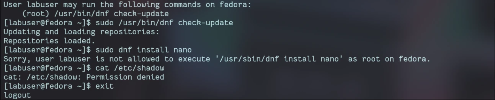
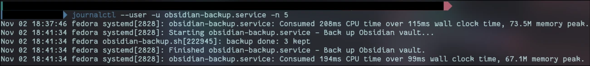

Fedora hardening
Going through my everyday laptop, one area at a time
This is the Fedora laptop I use every day. I'm working through it in eight parts, and for each one I write down what I found, what I changed, how I checked it and how to undo it.
- Machine
- Fedora with Hyprland, btrfs on LUKS2
- Method
- Findings, changes, verification, rollback
- Publish
- Outputs redacted and scanned for secrets by script
- Latest
- 05 users and sudo, 2 Nov 2026
- 01 disk layoutpublished
- 02 packages and repospublished
- 03 journalctlpublished
- 04 systemdpublished
- 05 users and sudopublished
- 06 firewalldto do
- 07 SELinuxto do
- 08 powerto do
Why I did it this way
Drop-in files for every change
I put changes in small drop-in files like journald.conf.d/50-size.conf and leave the defaults alone. Deleting the file undoes the change, package updates don't overwrite it, and it's easy to see exactly what I touched.
A script checks everything before it's published
This is my real machine, so every output file is redacted and scanned for secrets by a script before it goes in the public repo. The LUKS header backup is on a USB stick and stays out of the repo.
How I know it worked
Two checks from the parts published so far.
Part 05, users and sudo
One sudo rule, tested with a throwaway user
I gave a test user exactly one root command. That command ran, dnf with different arguments was refused, and reading /etc/shadow was denied. Then I deleted the rule and the user.


Part 04, systemd
The daily backup runs from a timer
A user-level systemd timer makes a dated, compressed copy of my notes vault every day and keeps the newest 14. I also extracted the newest one to make sure it restores.
$ journalctl --user -u obsidian-backup.service


What went wrong
Two problems so far.
-
The first backup run failed
- What I saw
- The backup service failed the first time it ran.
- Cause
- I'd left a placeholder in the script where the vault folder name goes, so
tarcouldn't find it. - Fix
- I put in the real folder name. The script starts with
set -euo pipefail, so it stopped at the error and didn't report a successful backup of nothing.
-
sudo rejected my new rules file
- What I saw
visudo -ccomplained about the permissions on/etc/sudoers.d/10-hardeningand asked for mode 0440.- Cause
- sudo won't load a rules file that looks writable, because anyone who can write to it can give themselves root.
- Fix
- I set the owner to root and the mode to 0440, then checked the new defaults with
sudo -l.
What's left
Three parts to go: firewalld, SELinux and power. I'll update this page as each one is published.
Tools so far: LUKS2 and cryptsetup, btrfs, dnf, journald, systemd units and timers, sudoers, Bash.